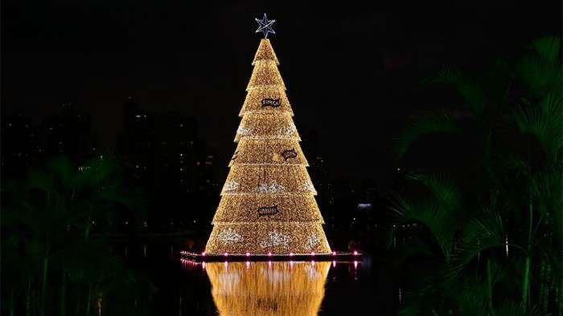

No dia 20 de setembro, o projeto de decoração Natalina, criado pelo Instituto de Londrina foi aprovado pela prefeitura. De acordo com o site Bonde News, até 5,8 milhões de reais serão gastos para a realização desse grande evento. A instituição diz que o projeto será dividido em cinco partes e ganhará novos desenhos, além da colaboração de diferentes empresas A decoração contará com a iluminação do Lago Igapó e a instalação de túneis iluminados e cometas na avenida Saul Elkind, além de fornecer árvores naturais, iluminação de prédios públicos, enfeites rotatórios e casa do Papai Noel. Com passarelas iluminadas e estruturas flutuantes, além de enfeites diversos, o investimento será 241% maior do que em 2021, ano em que as decorações tiveram menor investimento por conta da pandemia. O município reduziu a iniciativa e investiu na iluminação natalina 1.7 milhões de reais, de acordo com o site CBN Londrina.
